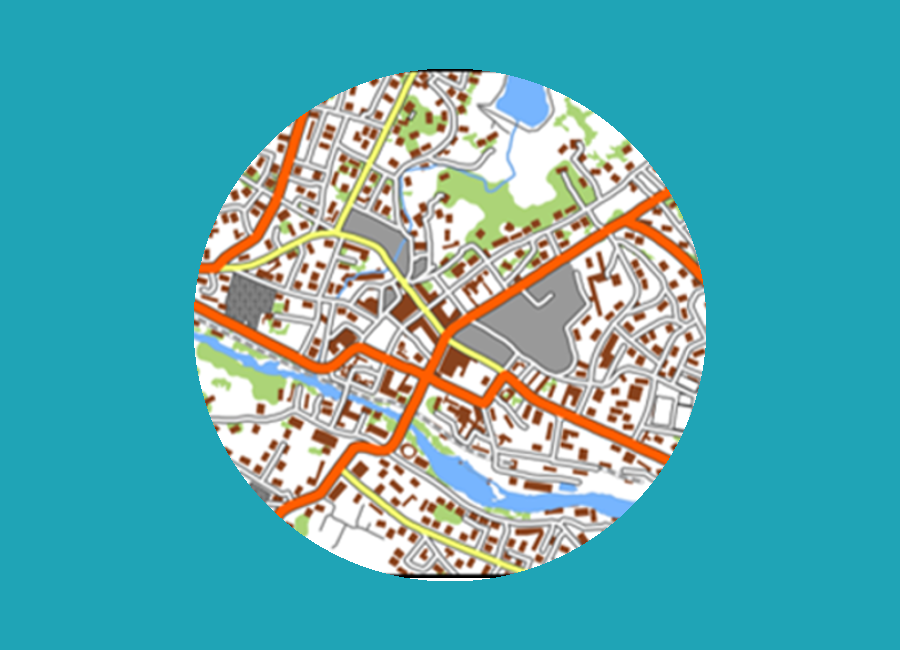
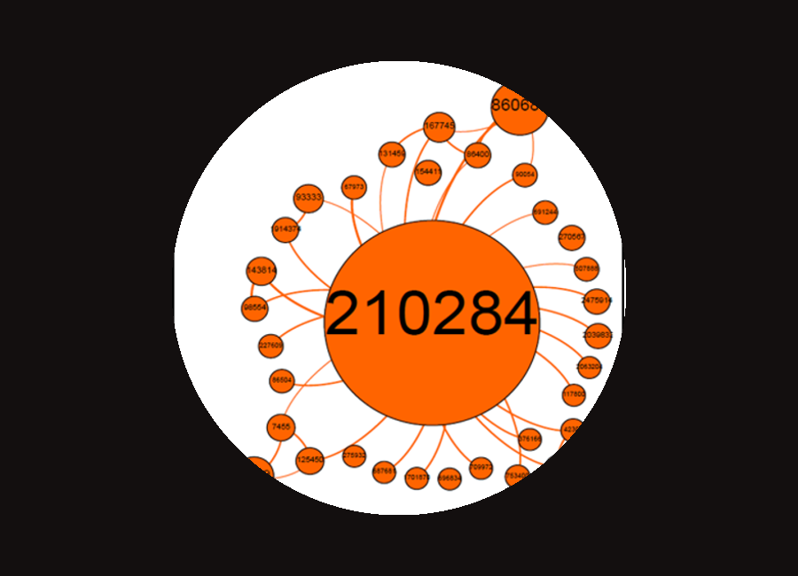
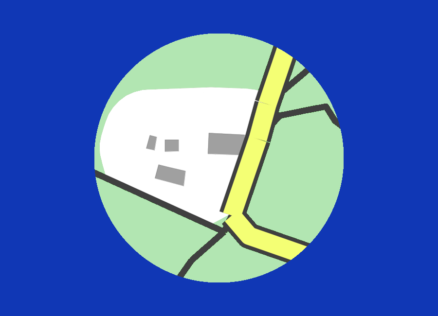
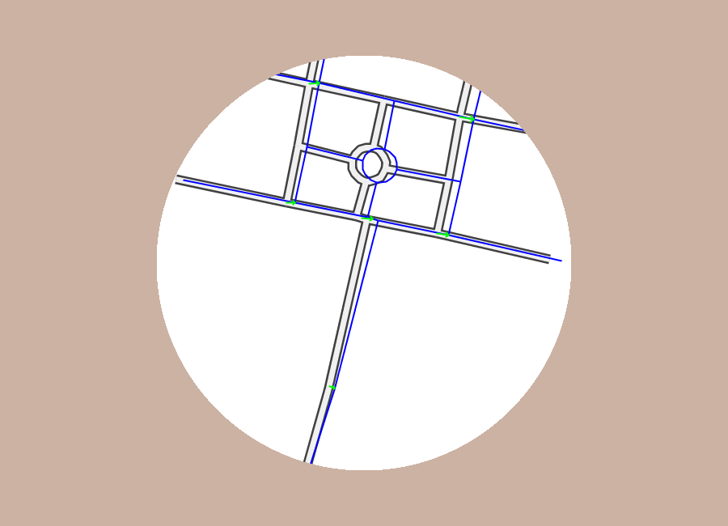
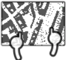

Associate professor
Member of the ACTE research team
Co-coordinator of the Master 2 Geographical Information, Spatial Analysis and Remote Sensing
Maîtresse de conférences HDR
Membre de l'équipe ACTE
Co-responsable du Master 2 Information Géographique, Analyse Spatiale et Télédétection




Some publications in HAL
A elementum ligula lacus ac quam ultrices a scelerisque praesent vel suspendisse scelerisque a aenean hac montes.

A elementum ligula lacus ac quam ultrices a scelerisque praesent vel suspendisse scelerisque a aenean hac montes.
A elementum ligula lacus ac quam ultrices a scelerisque praesent vel suspendisse scelerisque a aenean hac montes.